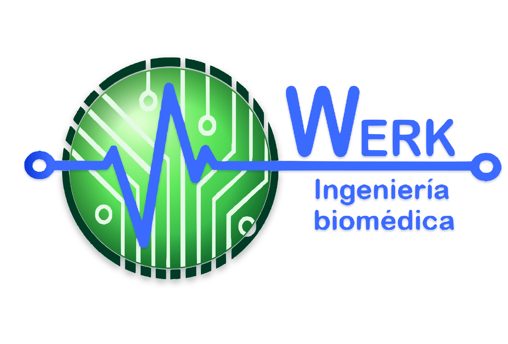

WERK SRL
Innovación y Calidad al Servicio de la Salud
Contamos con un equipo de instaladores especializados en equipos de diagnóstico por imágenes, garantizando una puesta en marcha segura y eficiente.

Solicitar cotizaciónWERK SRL
Contamos con un equipo de instaladores especializados en equipos de diagnóstico por imágenes, garantizando una puesta en marcha segura y eficiente.
Centro de Soporte Técnico
Contamos con un Centro de Soporte Técnico, brindando asistencia ágil y soluciones a medida.
Proporcionar soluciones integrales de mantenimiento y soporte técnico para equipamiento médico, garantizando su óptimo funcionamiento y seguridad. Nos comprometemos a ofrecer un servicio de calidad y confiable, apoyando a las instituciones de salud en su misión de brindar atención médica de alta calidad a los pacientes.
Ser la empresa líder en prestación de servicios técnicos en el sector de la salud, reconocida por su excelencia, innovación y compromiso con la mejora continua, asegurando que todos los equipos médicos funcionen con la máxima eficiencia.
“Innovación y calidad al servicio de la salud”Nuestro compromiso es la excelencia y la innovación para la salud.
✺ CalidadExcelencia en todos nuestros servicios, bajo los más altos estándares.
⌁ IntegridadTransparencia y ética en cada interacción.
♙ InnovaciónMejora continua y nuevas tecnologías.
π CompromisoRespuesta rápida a las necesidades del cliente.
◎ Trabajo en equipoColaboración en un ambiente de trabajo positivo.
▤ ResponsabilidadSeguridad y bienestar de clientes y usuarios.
Aplicacionista especializado para optimizar el rendimiento de los equipos.
Servicio técnico adaptado a cada área del diagnóstico por imagen.
Equipo de instaladores especializados que garantiza una puesta en marcha segura y eficiente.
Brindamos asistencia ágil y soluciones a medida para cada necesidad.